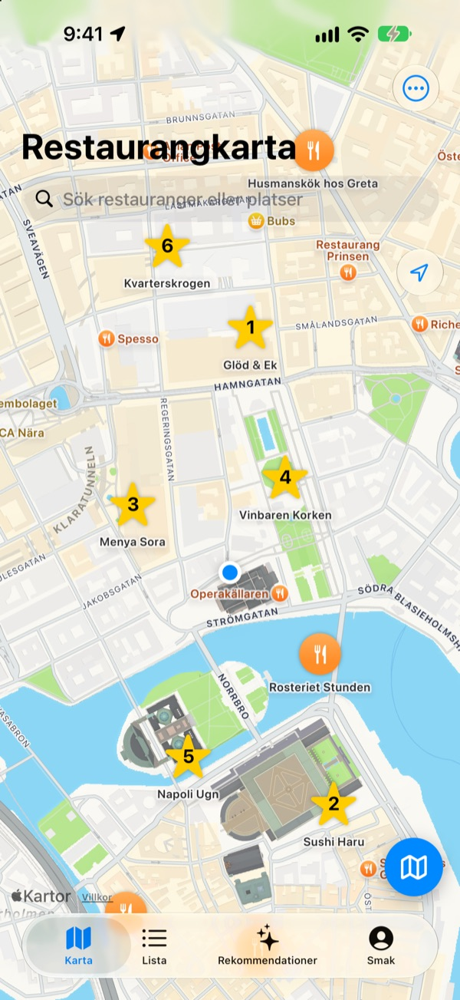
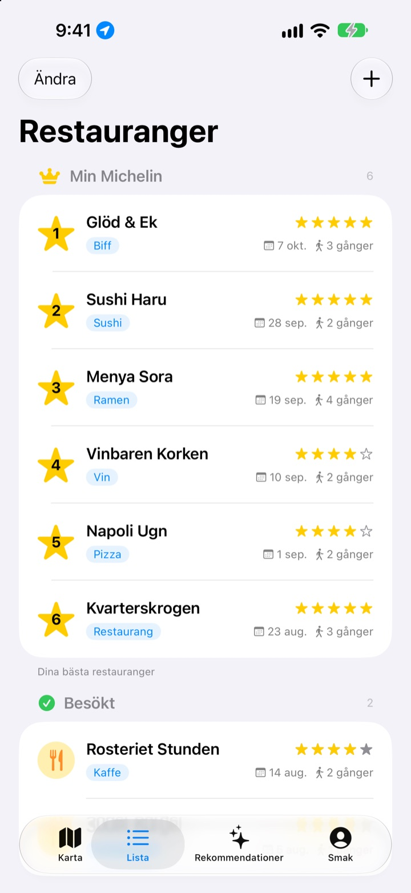
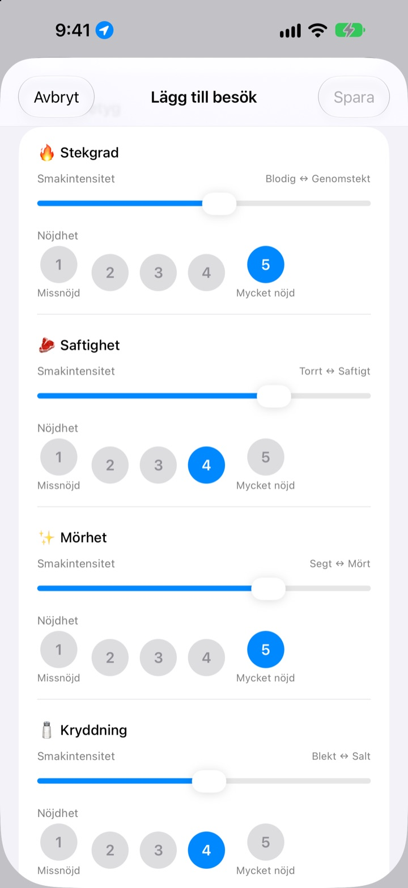
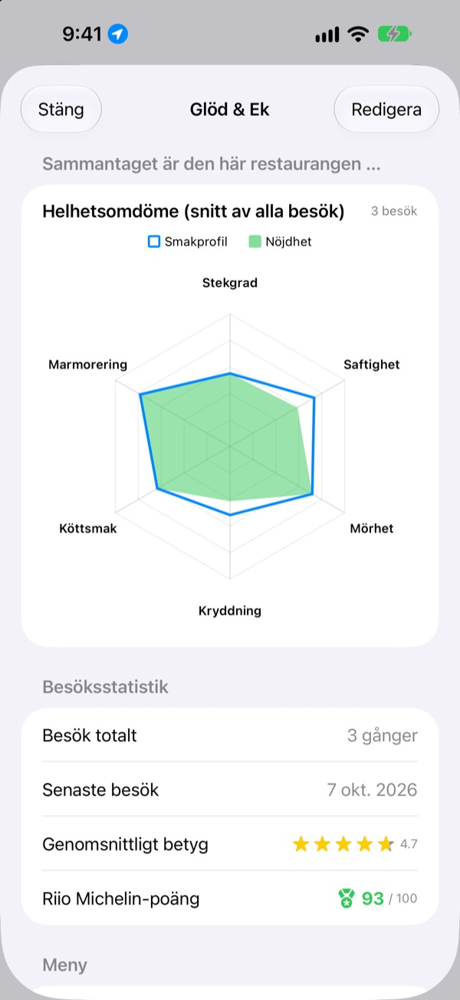

Glöm aldrig igen
var maten var god
Markera restaurangerna du besökt och vill testa på kartan, och skriv vid varje besök ner vad du beställde, bilder och smaken. När du inte vet var du ska äta har dina egna anteckningar svaret.
Alla funktioner är gratis. Ingen registrering, allt stannar på din iPhone.

Betygsätt en rätt
Välj en typ av mat och ställ in hur stark varje smak var och hur mycket du gillade den. Samma kriterier och samma uträkning som ett besök i appen.
Det var gott, men vad var det jag beställde?
Du minns att du gillade stället, men namnet är suddigt, och vad du beställde eller om buljongen var för salt minns du inte alls. Så du söker igen och läser främlingars recensioner. Insaeng sparar det du själv har smakat på en karta, så att nästa val bygger på din egen erfarenhet.
Besökt, Vill besöka och din egen Michelin
Sök på kartan eller tryck på ett ställe i närheten, så är det sparat. Håll ställen du varit på åtskilda från dem du vill testa, och ranka dina sex favoriter från 1 till 6.
När någon frågar efter ett tips visar du bara listan.

Frågor som passar rätten
Hur stark en smak var, till exempel hetta eller salt, ställer du in med ett reglage, och hur mycket du gillade den betygsätter du separat från 1 till 5. Biff handlar om stekgrad och saftighet, sushi om ris och fisk, ramen om buljong och nudlar.
Varje besök sparar också rätt, bilder, stjärnor och anteckningar.

Vart det är värt att gå tillbaka syns i siffror
Efter flera besök visar varje restaurang ett helhetsomdöme med snittet av alla besök och Riio Michelin-poäng av 100 som kombinerar stjärnor och nöjdhet.
När du lämnar en sparad restaurang kommer en påminnelse lite senare om att skriva ner besöket.

Kom igång i tre steg
- 1
Spara en restaurang
Sök på kartan eller tryck på ett ställe i närheten.
- 2
Skriv ner besöket
Rätt, bilder, stjärnor och smak. Smakbetyget är frivilligt.
- 3
Välj nästa ställe
Kolla din topp 6 och poängen, och hitta dit med Apple Kartor, Kakao Map eller Naver Map.
Det här betygsätter du för varje typ av mat
- 🍽️ Allmänt
- Hetta, Fyllighet, Sötma, Salthet, Fetthet, Naturlig smak
- 🥩 Biff
- Stekgrad, Saftighet, Mörhet, Kryddning, Köttsmak, Marmorering
- 🍣 Sushi
- Shari (ris), Neta (fisk), Wasabi, Balans, Formning, Temperatur
- 🍜 Ramen
- Buljong, Nudlar, Chashu, Toppings, Temperatur, Balans
- 🍕 Pizza
- Deg, Sås, Ost, Stekgrad, Toppings, Balans
- 🍷 Vin
- Fyllighet, Tanniner, Syra, Arom, Eftersmak, Balans
- ☕ Kaffe
- Syrlighet, Fyllighet, Smak, Eftersmak, Sötma, Balans
All annan mat betygsätts med de allmänna kriterierna i första raden. Du kan också skapa egna kategorier.
Vanliga frågor
Hur lägger jag till en restaurang?
Skriv restaurangens namn i sökfältet högst upp på kartan och tryck på ”Lägg till i min restauranglista” i resultatet. Du kan också trycka på ett ställe i närheten som syns på kartan och lägga till det direkt. Om ett ställe inte dyker upp i sökningen kan du lägga till det manuellt där du står eller på en plats du väljer på kartan.
Vad betyder Besökta, Att besöka och Topp 6?
Besökta – restauranger du redan har varit på. Här kan du spara besöksloggar. Att besöka – restauranger du vill testa någon gång. När du har varit där byter du till Besökta på restaurangens detaljsida. Topp 6 (din egen Michelin) – ranka dina sex favoritrestauranger från 1 till 6. Ställen under Att besöka kan inte läggas i topp 6.
Måste jag göra smakomdömen?
Nej, det är frivilligt. Om du betygsätter läggs smakintensitet och nöjdhet till restaurangens helhetsomdöme och räknas in i Riio Michelin-poängen.
När kommer notisen ”Hur var ditt besök i dag?”?
Om du stannar mer än 5 minuter i närheten av en sparad restaurang och sedan går därifrån får du en notis ungefär 40 minuter senare. Funktionen kräver platsåtkomst ”Alltid” och att notiser är tillåtna. Om du inte vill ha notisen kan du stänga av notiser under Inställningar > Appar > Insaeng, eller ändra platsåtkomsten till ”När appen används”. Platskontrollen sker bara på enheten. Dina förflyttningar sparas inte och skickas inte någonstans.
Kan jag använda appen utan platsåtkomst?
Ja. Du kan välja en plats på kartan själv för att lägga till och logga restauranger. Det enda du går miste om är att se din aktuella plats och påminnelsen efter besöket.
Platssökningen ger inga resultat
Platssökning kräver internetanslutning. Prova ett annat namn eller ett kortare sökord. Hittar du fortfarande inget kan du välja platsen på kartan och lägga till den manuellt.
Var sparas mina loggar? Synkas de med andra enheter?
Restauranger, besöksloggar och bilder sparas bara på den här iPhonen. Den nuvarande versionen har inte stöd för synkning med andra enheter, och iCloud-säkerhetskopiering och återställning i inställningarna fungerar inte ännu. Appens data ingår däremot i en fullständig säkerhetskopia av din iPhone (iCloud-säkerhetskopia eller säkerhetskopia på datorn).
Jag vill radera alla mina loggar
Tryck på ”Radera all data” i inställningarna från kartvyn så raderas restauranger och besöksloggar. Det går inte att ångra, så var försiktig. Om du vill att även bilderna ska försvinna helt tar du bort appen.
Finns mina loggar kvar om jag tar bort och installerar om appen?
Nej. Eftersom loggarna bara sparas på enheten raderas de när du tar bort appen. Tänk på det innan du tar bort den.
Är verkligen allt gratis?
Ja. Alla funktioner är gratis, utan reklam och utan konto. ”Stöd utvecklaren” i inställningarna är helt frivilligt och låser inte upp något.
Hittar du inget svar ovan? Skicka ett meddelande direkt från Inställningar > Support i appen eller mejla mizzking75@gmail.com. Ange gärna appversion, iPhone-modell och vad du gjorde på vilken skärm, så kan vi hjälpa dig snabbare.